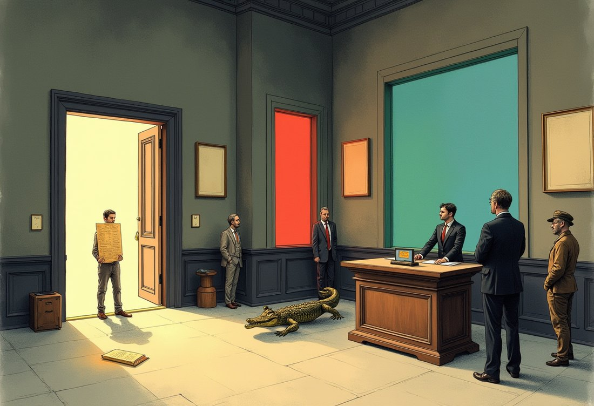
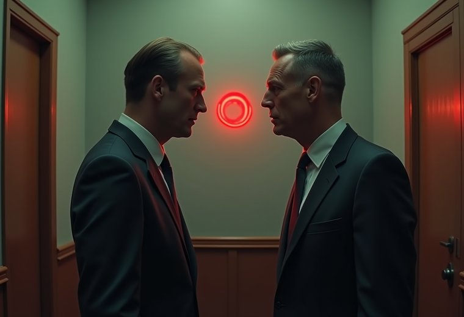
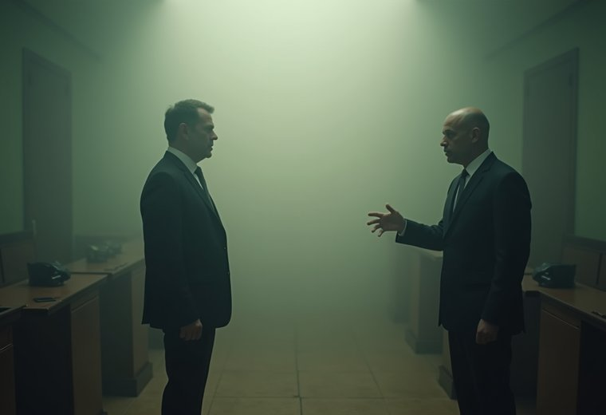
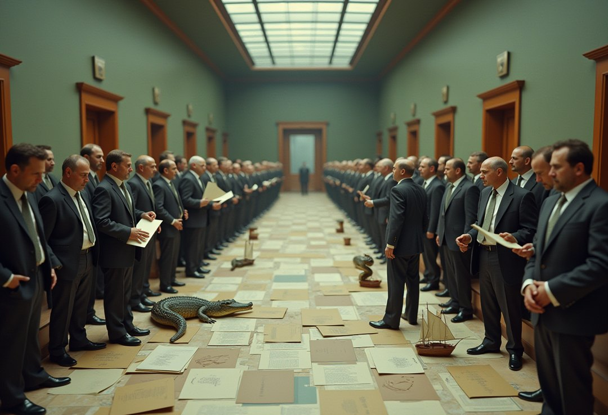

v1.1 — 2026-08-13. English edition. Supersedes v1.0 (2026-08-09, DOI
10.5281/zenodo.21864082). Changes: a ninth verdict — Agrippa's dogmatic horn
splits under this paper's own count (§4.9); four jurisdiction edges crossed rather
than merely declared — the sorites, the surprise exam, the lottery and Berry, plus
Moore (§5); the second genre of defect, the empty description and the status E
(§5.1); the docket table re-measured row by row against the machine
(inventory/docket_claims.py); and one extension to the instrument's vocabulary,
recorded in Appendix B.
Vitaly Reznik (curator), with AI participation — see Acknowledgements.
Abstract. For twenty-three centuries the word "paradox" has been handed out without an audit: it is worn by genuine logical dead ends, by harmless puzzles, and by plainly ill-posed questions. We conducted the audit. The classical collection — the liar and its family, Russell, Curry, Yablo, the crocodile, the Ship of Theseus and others — was run through a single executable instrument that, for every self-referential sentence, counts the number of consistent classical solutions and issues a passport: zero solutions — a genuine paradox (refusal forever); exactly one — the verdict is forced; two or more — not a paradox but a choice awaiting a decree. The result is a court docket: 21 case files and nine short verdicts, each reproducible with a single command. Few of the celebrities keep the title "paradox" once the papers are checked; most had been wearing it without documents. The taxonomy descends from Kripke and from Gupta–Belnap and is credited to them explicitly; what is new is executability: disputes that are decades or centuries old — is circularity vicious; is a loop hidden inside Yablo; is Curry just the liar; is the Ship of Theseus a paradox at all — receive measured rather than argued answers. In this version the same count is turned on Agrippa's trilemma, and his third horn does not survive it intact: a stopping point with two admissible settings is a choice that was really made, while one with exactly one is a terminus nobody chose, and the difference is arithmetic rather than temperament.
Nobody polices the word "paradox" in philosophy. It is issued generously and for life: "the liar paradox", "the barber paradox", "the Ship of Theseus paradox", "the crocodile paradox" — one and the same word on the business cards of characters with entirely different fates. Yet the difference between them is not a nuance. Some questions have no consistent answer at all, and no future discovery will bring one. Others have exactly one answer — it merely arrives from an unexpected direction. Still others have several equally lawful answers, and the whole "abyss" reduces to the fact that nobody has taken responsibility for choosing. Wearing one word for all of them is like calling the plague, a runny nose, and nail-biting all "a disease".
This paper is an audit. We took the classical collection in its entirety, seated everyone at one table, and issued each a document. The instrument is executable: any verdict in this paper can be recomputed by the reader with one command on their own machine, or with one button in a browser (§7). By the last page every celebrity will hold a passport — and most will turn out to be impostors.
A word about genre, up front: we do not solve paradoxes and we do not propose a new theory of truth. We carry out a census with a measuring instrument — and discover that the census itself, when done by a machine, hands down verdicts in disputes that are decades and centuries old.
The instrument is built on ZTL (Zero-Trust Logic), organized around a single principle: truth is not granted on credit. Every atomic claim has one of three statuses: earned — a completed verification has been produced (T); refuted — the verification came out against (F); on credit (Z) — no verification has been produced. Z is not "unknown" and not "half-true": it is an honest tag reading "unverified", and the logic forbids treating it as truth. Negation in ZTL is not a value-flipper but a verdict about the status of a verification; everything else follows from that asymmetry. This paragraph is all you need to read the paper. The full axiomatics, 394 machine-checked theorems (Lean 4, empty axiom lists) and the entire corpus of expeditions are in the canonical preprint: ZTL — Zero-Trust Logic, Zenodo, DOI 10.5281/zenodo.21318981 (concept DOI, resolving to the current version).
The first of the two working instruments is the judge (module ztljudge). Given a formula and a marking (what is earned, what refuted, what on credit), it returns three things: the verdict (true/false/refusal), the grade — the quality of the verdict (the highest grade, hereditary, means "earned under every possible future"; the lowest holds only until the first verification), and, most importantly, a named list of weak links: exactly which verifications are missing. The judge never says "something is wrong with your argument" — it says "your conclusion hangs on the unverified link j". In this paper the judge works in the eighth, acquitting verdict, and again in §5 wherever a case has no loop to count — the sorites, the surprise exam, the lottery, Moore; the main work is done by the second instrument.
The second instrument is the passport office (module zpassport, expedition E18 of the ZTL corpus). Given a system of definitions — sentences referring to one another ("L asserts: L is false") — it does three things:

The control weight of the whole construction: a court that cannot convict is worth nothing. At this desk the liar receives precisely PARADOX — zero solutions, period 2, refusal forever. Every acquittal below is worth exactly as much as this conviction.
Both instruments are available live: ZTLStudio (https://ztl.vitalyreznik.com) — a web interface over the very same core, no installation. The Paradoxes tab is the passport office: a drop-down list of classical examples, the formal record visible and editable, and a "Run on the core" button that returns the passport. The built-in AI translates from human language into the formal one — but it never issues verdicts; the studio warns explicitly: "AI explanation unverified by definition — the verdict above is the authority." We return to the recipe in §7.
Below is the main table. Every row is a measurement; the full reference run (zclassify.py, expedition E35) is attached as Appendix A and reproduces with a single command.
Table 1. The court docket: 21 case files.
| # | Case | One-line record | Passport | Solutions | Period | Negations |
|---|---|---|---|---|---|---|
| 1 | Liar | L ≡ ¬L | PARADOX | 0 | 2 | 1 |
| 2 | Barber | shaves(b) ≡ ¬shaves(b) | PARADOX | 0 | 2 | 1 |
| 3 | Grelling ("heterological") | het ≡ ¬het | PARADOX | 0 | 2 | 1 |
| 4 | Russell's cell R∈R | r ≡ ¬r | PARADOX | 0 | 2 | 1 |
| 5 | Jourdain / crocodile | R ≡ M, M ≡ ¬R | PARADOX | 0 | 4 | 1 |
| 6 | Odd 3-cycle | a≡¬b, b≡¬c, c≡¬a | PARADOX | 0 | 2 | 3 |
| 7 | Curry with a real ⊥ | γ ≡ (γ→F) | PARADOX | 0 | 2 | — |
| 8 | Truth-teller | τ ≡ τ | UNDERDETERMINED | 2 | 1 | 0 |
| 9 | Russell's twin S∈S | s ≡ s | UNDERDETERMINED | 2 | 1 | 0 |
| 10 | Optimistic crocodile (control) | R ≡ M, M ≡ R | UNDERDETERMINED | 2 | 1 | 0 |
| 11 | Even 2-cycle | A≡¬B, B≡¬A | UNDERDETERMINED | 2 | 2 | 2 |
| 12 | Even 4-cycle | (4 negations) | UNDERDETERMINED | 2 | 2 | 4 |
| 13 | Strong liar | σ ≡ ¬σ∧σ | INTRINSIC (σ=F) | 1 | 1 | — |
| 14 | Revenge / avenger | μ ≡ ¬(μ↔μ) | INTRINSIC (μ=F) | 1 | 1 | — |
| 15 | Henkin-style | h ≡ (h→h) | INTRINSIC (h=T) | 1 | 1 | — |
| 16 | Yablo truncated at n=3 | sᵢ ≡ ⋀ⱼ˃ᵢ ¬sⱼ | GROUNDED | — | 1 | — |
| 17 | Yablo truncated at n=6 | — | GROUNDED | — | 1 | — |
| 18 | Theseus title contest | theA≡¬theB, theB≡¬theA | UNDERDETERMINED | 2 | 2 | 2 |
| 19 | "Sameness with no criterion" | same ≡ same | UNDERDETERMINED | 2 | 1 | 0 |
| 20 | "The same person" (all observations match) | S ≡ obs∧S, obs=T | UNDERDETERMINED | 2 | 1 | — |
| 21 | "The same person" (a mismatch) | S ≡ obs∧S, obs=F | GROUNDED (S=F) | — | 1 | — |
Plus separate systems outside the table: Curry with a suspended ⊥ (case 7-bis, DOWNSTREAM — §4.5), Agrippa's dogma (UNDERDETERMINED + DOWNSTREAM with the culprit named), and the contingent liar in three worlds (§4.7).
Reminder cards, one sentence each: the liar — "this sentence is false"; the barber — shaves exactly those who do not shave themselves: does he shave himself?; Grelling — the word "heterological" means "not applying to itself": is it heterological?; Russell — the set of all sets that do not contain themselves: does it contain itself?; Jourdain — a postcard: the front reads "the sentence on the back is true", the back reads "the sentence on the front is false"; the crocodile — "I will return the child if you guess what I am about to do" — the mother: "you will not return him!"; Curry — "if this sentence is true, then ⊥" (its everyday evil version: "if this sentence is true, then Santa Claus exists" — under classical treatment anything follows); the truth-teller — "this sentence is true"; Yablo — an infinite queue, each member saying "everyone after me lies"; the strong liar — "I am lying, and I am right"; Theseus — every plank of the ship has been replaced, and a second ship was assembled from the old planks: which one is the real one?
The liar is a genuine paradox: zero solutions, refusal forever, period 2. The confrontation is more interesting still. The barber, Grelling's "heterological" and Russell's famous cell gave bit-for-bit identical testimony: the same passport, the same zero solutions, the same period, the same parity. Four great names — one paradox in four costumes; "these are all the same thing" has been said for a century, and now it is a collated protocol.
Russell deserves a separate note: in the full universe (E11 of the ZTL corpus: the empty set, a self-containing set, and R) the catastrophe occupies one cell — R∈R. The other 8 of 9 membership facts are calmly grounded; Russell works perfectly well as a set for everyone except himself. Frege's whole system collapsed because classical logic demands an answer in every cell. A quarantine the size of one cell — versus demolishing the building.
Take any circle of definitions and count the negations in it. An odd count is a conviction; an even count is a blank form. The truth-teller (zero negations) and the even cycles of length 2 and 4 all have exactly two lawful solutions, and the stipulation theorem guarantees: legalize either one and nothing breaks. The odd cycles (the liar, the triple) have zero solutions — refusal forever. The moral, worth pronouncing slowly: it is not the circle that is vicious — it is the odd parity. Half a century of "vicious circles" in the textbooks is, in fact, half a century of parity left uncounted.
Intuition is sure that "I am lying AND I am right" is the liar squared. Measurement says the opposite: the strong liar has exactly one solution — it is false, forcedly, with no alternatives. No abyss: an ordinary false loudmouth, passport INTRINSIC. Its mirror — "if I am right, then I am right" — is forcedly true. Adding a contradiction does not deepen the pit — it fills it in: the more a sentence says about itself, the less freedom it has, and at "exactly one solution" the freedom runs out without ever reaching zero.
Yablo's paradox is famous for the claim "a paradox without self-reference": an infinite queue of sentences, each saying "everyone after me lies". For half a century the dispute has run (Priest vs. Sorensen) over whether circularity is hidden inside it. Our contribution to the dispute is an alibi: every finite truncation of the queue is fully grounded (checked at n=3 and n=6 — not a single quarantined cell, every verdict computes). The paradoxicality does not live on any finite segment — all of it, without remainder, lives in the actual infinity. Whoever is prepared to pay for actual infinity pays for Yablo too; for whoever is not, Yablo is innocent for lack of a reachable corpus delicti.
Curry's sentence — "if this sentence is true, then ⊥" — is the subject of an old dispute: is the implication to blame, the self-reference, or something third? Measurement splits the question into two cases. If ⊥ is a real, grounded falsehood, then Curry is literally the liar in an implication costume: zero solutions, period 2, the same passport. If instead ⊥ itself hangs unverified (defined over an ungrounded base), the passport changes: DOWNSTREAM — the refusal is not its own but inherited, and the culprit is named. The answer to the dispute: it depends on what is fed to the arrow. The two Currys now carry different documents, and confusing them is no longer obligatory.
The liar blinks with period 2. Jourdain and the crocodile — the same article of the code, zero solutions — blink with period 4: the verdict shift makes a round trip through both participants. The passport does not determine the handwriting — this is genuinely a second axis of classification (Gupta–Belnap revision signatures).
The crocodile also shows a second thing: how fragile the border between a conviction and a blank is — and who actually ends up holding the pen. Flip the mother's prediction to the optimistic one ("you WILL return him!") — one negation disappears, the parity clicks, and the conviction becomes a blank with two lawful solutions: he returned the child — the word was kept; he did not — the word was also kept. But notice who chooses between them: not the mother and not a court — the crocodile, at his own pleasure. The deal binds him in neither solution. And in the original, odd world the deal cannot be honored at all. The measurement (expedition E4) closes both worlds at once: the contract "I return ⟺ you guessed" never earns truth at the quarantined point — neither for the pessimist mother nor for the optimist. In legal translation: the contract is void — no obligation ever arose. For the pessimist it is void by impossibility of performance; for the optimist, by vacuity; in both worlds the mother decides nothing — her sentence is merely the content of someone else's loop. The famous "crocodile dilemma" is a dispute over a contract that was never concluded.
Kripke noticed what we have now measured. Smith says: "what Jones said is false." The sentence is one and the same — but its fate depends on the world:
One sentence — three passports. No filter over the text can catch paradoxes in advance: paradoxicality is not a property of a sentence but a concurrence of circumstances in the world the sentence talks about. A paradox is an event, not a text.


Our dilemma series (published as separate case studies) went through the same desk: the title contest of the Ship of Theseus, "sameness with no criterion", "is this the same person", Agrippa's dogma. All received the passports of blanks: two lawful solutions, a decree, nothing breaks; the dogma — DOWNSTREAM with the culprit named, a reading §4.9 now sharpens; "the same person", the moment one observation fails to match, grounds to "no" instantly. In the entire collection — not one paradoxical component. The court that convicted the liar (and Jourdain, and the odd cycles) acquitted Theseus — and that is what the acquittal is worth: the judge knows how to convict, so its "not a paradox" is a document, not politeness.
We foresee the metaphysician's objection: "planks, form, history — those are your three questions; I asked which ship is the same in itself." We do not leave this question unanswered — we issue it a document too. "Sameness in itself, free of any criterion" is the definition same := Tr(same), which by its own construction rejects every producible criterion; the passport office hands it the truth-teller's blank: two lawful stipulations, neither of them earnable — the question itself has outlawed all evidence. The burden then flips: name one observation you would agree to count — and it will turn out to be one of the three criteria, with an instant answer; name none — and you have countersigned the passport yourself.
Table 2. Certificates: old disputes — measured answers.
| Dispute | Positions in the literature | What the measurement showed |
|---|---|---|
| "Circularity is vicious" | universal ban on self-reference (Tarski-style) vs. admission (Kripke) | parity is vicious, not the circle: odd — conviction, even — a blank (stipulation theorem) |
| Yablo: is there a hidden loop? | Priest (circular) vs. Sorensen (not) | every finite segment grounded; all paradoxicality lives in the actual infinity |
| Curry: who is to blame? | implication vs. self-reference vs. detachment | depends on the status of ⊥: real falsehood → the liar; suspended → inherited refusal, culprit named |
| Russell: total ban or local repair? | type theory vs. restricted comprehension | the catastrophe = one cell of nine; types also ban the twin S∈S, which is curable by decree |
| "The worsened liar is scarier" | folklore intuition | the opposite: exactly one forced solution (INTRINSIC) |
| The crocodile: what should he do? | the sophists: a trap with no exit | the contract is void — no obligation ever arose: unperformable for the pessimist (0 solutions), non-binding for the optimist (any action "honors" the deal) |
| Is Theseus a paradox? | 2400 years of "yes" by default | zero paradoxical components: facts plus a blank awaiting a decree |
| Is the dogmatic horn one thing? | Agrippa, Sextus, Albert: one horn, uniformly fatal | two things by the count: 2 settings — a choice really made; 1 setting — a terminus nobody chose, which the argument does not reach |
| Is a self-supporting foundation vicious? | Münchhausen: pulling oneself out by one's own hair | UNDERDETERMINED, curable by stipulating a member — the same blank the truth-teller holds, and priced: whatever rests on it falls with it |

The oldest argument in the collection is not a paradox but a machine for producing them. Agrippa's trilemma — the Münchhausen trilemma in Hans Albert's modern form — observes that every chain of justification ends in one of three ways: it never ends (regress), it returns into itself (circle), or it stops at something unjustified (dogma). Two of the three have already appeared at this desk in other clothes. The circle is §4.2: viciousness is the parity of the negations, not the circularity. The regress is measured in dilemmas/agrippa.py, where the debt does not merely go unpaid but compounds, one unverified link per storey.
The third horn is the one this paper's instrument has something new to say about, because the horn is not one thing. Compare two stopping points, both self-supporting, both ending the chain:
| The stopping point | Passport | Settings |
|---|---|---|
f := f — it holds because it holds |
UNDERDETERMINED | 2 |
f := f xnor f — it holds because it could not do otherwise |
INTRINSIC | 1 |
f := not f — the liar, for contrast |
PARADOX | 0 |
The count is the same count the whole paper runs on, turned on a foundation instead of on a sentence, and it separates two situations that the word "dogma" has always kept together. Two settings means the choice was real: someone picked, someone else could have picked differently, and the fifth postulate, the axiom of choice and propositional extensionality are exactly this — each has a coherent rival, and the rival is why we call the stop arbitrary. Agrippa's complaint lands, in full. One setting means there was nothing to pick. The chain stops without anybody deciding to stop it, and "you could have gone otherwise" has no referent.
The distinction matters because a stopping point of the second kind is available, and it is not exotic. A nullary operation — an operation with no arguments — terminates a chain for a structural reason: there is nothing to supply it, so the question "and what grounds that?" has no next instance of its own form. It is not a proposition, so there is nothing to deny; its "alternative" is not a rival mathematics but silence. The exhibit is the VR corpus, where zero is precisely the 0-ary term-former of an inductive type and induction is the recursor rather than a postulate, and where the Lean elaborator confirms the axiom cost of the entire formal system as [] — no propositional extensionality, no choice, no quotient soundness. Uniqueness comes free rather than by stipulation: two nullary grounds could be told apart only by something, there is nothing yet to tell them apart by, and what no witness distinguishes is one thing under that corpus's own identity criterion.
Agrippa's argument is stated about the justification of statements. Against a chosen stop it bites. Against a terminus of this kind it does not fail — it does not reach, which is a different and weaker result than a refutation, and we claim no more than it. Nor is the philosophical move new: the regress ending in doing rather than in saying is Wittgenstein's bedrock, the pragmatists' answer, and closest of all Brouwer, for whom the primordial intuition is explicitly not an axiom. What did not exist before is the exhibit — a foundation whose axiom cost is zero and machine-confirmed, which no amount of argument could have supplied.
Two honest limits, both measured rather than conceded under pressure. First, nullarity is declared and not verified: relabel an ordinary axiom as an act and it collects the same immunity, and no instrument here detects the fraud (dilemmas/agrippa_nullary.py §3). What the ledger gives instead is disclosure — every claim of a structural stop is itemized by name, where Agrippa's horn is dangerous precisely because it is silent. Second, the horn has a price range rather than a price. Built as an actual ledger of claims, a five-storey regress warrants nothing at any storey — five on credit, zero earned — while the identical chain with one document beneath it earns all five and that one document carries the whole structure: withdraw it and every storey falls, including the four that never named it. The two horns are one construction at two settings, and the choice between them is the choice between warranting nothing and warranting everything on a single card (dilemmas/agrippa_book.py).
That measurement also cost us a sentence, which is recorded here rather than quietly dropped. Support in a no-credit register is conjunctive — every ground necessary — so a claim resting on two documents is more fragile than one resting on one, each document being another way to break it; from which we concluded that robustness comes only from independence. It does not. The conclusion was the instrument speaking: the ledger had no way to write "two independent invoices for the same sum, either one sufficing". Given that vocabulary, the same web takes zero damage from any single withdrawal and the cascade dies one storey above the loss. Robustness comes from alternatives, which is what the coherentist and Bayesian pictures always said; we had merely been unable to record it. Independence, like nullarity, is declared and unverifiable — a photocopy buys the same immunity — and gets the same treatment: itemized, not detected.
The passport office judges finite systems of definitions — the genre of self-reference. It honestly does not judge: the sorites (vagueness — there is no loop there, only a creeping boundary), the surprise exam (epistemic time), the lottery and St. Petersburg (probability), Berry and Richard (definability — that requires arithmetized naming, which a finite language does not express), Newcomb (decision theory). We name the edges explicitly for a principled reason: a classification that does not know its own borders is just one more total theory. Knowing the edges is part of the strength, not a confession of weakness.
Four of those edges have since been crossed by other instruments of the corpus, and the results are stated here so that this paper's borders stay accurate rather than merely modest. The sorites is resolved in dilemmas/solved/sorites/: tolerance is refuted hereditarily by the two witnessed ends alone, every instance touching the unwitnessed middle is denied outright (Z → Z is F), and yet no sharp grain is asserted — the unpaid step is the classical identification of ¬(p → q) with p ∧ ¬q, and the boundary arrives only with the act that draws it. The surprise exam is in dilemmas/surprise.py: with the announcement held as knowledge, no day survives the elimination; held on credit, all five do — and the sentence "the exam is today and you do not know it" is EARNED in the teacher's ledger and OPEN in the class's, because a warranty belongs to a ledger and not to a sentence. The lottery is in dilemmas/lottery.py: with the thousand losses left unverified no contradiction arises, since a probability is not a witness and nothing was believed; stamp the beliefs and the rule dies on the LAST stamp rather than by accumulation (measured exhaustively on a five-ticket lottery: four stamps are as sound as one, the fifth refutes); and the closure that fails is closure over CREDIT, since conjoined earned claims keep their warranty. And Berry is in dilemmas/berry.py, where it turns out not to need arithmetized naming after all — only a book of names that changes when a description is added to it. With the book fixed the description is decidable and its answer EARNED; add the phrase and the answer marches without ever repeating, ending in E when every number has been named out from under it. The defect is the use of a description across the stage its own registration creates — the epoch boundary of §§21-23, reached from definability instead of from time.
One case never appeared on the list of edges because it was never taken for a paradox of this genre, and it belongs here for the same reason the others do. Moore's sentence — "it is raining, but I do not believe that it is raining" — is not self-referential and has no loop to count, so the passport office correctly has nothing to say about it; the judge does (dilemmas/moore.py). As a description of the world the sentence is innocent, designating in exactly one marking of nine, the score of any ordinary contingent conjunction against zero for a genuine contradiction. Add the single rule that asserting p requires a witness for p — which is this corpus's standing no-credit rule in the first person, not an assumption imported for the case — and the count is zero of nine, refuted rather than merely unproven. The omissive and commissive forms die alike, and an unsettled belief rescues neither, since ¬Z = F makes "I do not believe it" false when the belief is merely unsettled: non-belief cannot be claimed on credit either. The past tense returns to satisfiable in exactly one marking of twenty-seven — believe it now, did not believe it then — which locates the defect precisely: not in the words and not in the logic, but in the coincidence of the epoch of the assertion with the epoch of the belief. That Moore's puzzle concerns assertion rather than truth is the standard reading, from Wittgenstein through Shoemaker and Heal, and nothing here improves on it; where this register says more — the sentence is false in every marking, not merely absurd — the extra strength is bought at ¬Z = F and belongs to the register rather than to Moore.
There is a second way for a claim to resist judgment, and this table contains none of it. Every case above names something: the liar names a sentence, the barber a barber, Russell a set. The loop is real, its models are countable, and the count is zero — which is what the PARADOX passport reports. The other way is for an expression to name nothing at all: a type no value satisfies, a quantity required to be both unbounded and exceeded, a comparison between magnitudes that cannot meet. There the reading set is empty, there is nothing to quantify over, and the numeric floor returns the status E — not a verdict but a refusal to judge, carrying the reason and charged to the declaration that produced it (znum.py; the attribution and its census, znumjudge.e_census).
The discriminator is exactly "does the expression name something?", and it sorts the two genres cleanly. The stone an omnipotent being cannot lift is the instructive case, because it lands in both depending on how the word is read (dilemmas/omnipotence.py): read omnipotence as power over the logically possible and the STONE is refuted — a request with no instance, no limit on anyone's power; read it as power over anything whatever and the BEING is unjudgeable, E, charged to the definition, since nothing consistent answers to the term. No machine picks the reading; that is a stipulation about a word, and it is what the dispute was always about.
That all twenty-one classical cases fall on the loop side is itself a finding, and a mildly surprising one: the canonical paradoxes are not failures of reference but failures of settlement. The empty-description genre is populated mostly by definitions people write on purpose — impossible norms, unfulfillable clauses, contradictory specifications — which is why its instrument grew out of an audit ledger rather than out of the theory of truth.
The taxonomy's parents are named and not appropriated: the division into grounded / paradoxical / intrinsically forced is Kripke (1975); the oscillation signatures are the revision theory of Gupta and Belnap; the postcard itself is Jourdain (1913); the observation about contingency is Kripke's. The completeness of the axis (0/1/many exhaust a finite component) is an arithmetical fact, recorded in the ZTL corpus (E28).
What is ours is executability and arbitration: one instrument, one corpus, every row of the table a command, every verdict a run with a control weight. Throughout the paper "legitimate" means exactly one thing: the version matched the measured passport. It is a calibrated blessing, not an absolute one: we certify agreement with an instrument whose rules are open and themselves published.
Two ways to recompute this paper.
In the browser (no installation): ZTLStudio — https://ztl.vitalyreznik.com, the Paradoxes tab. The drop-down list holds this paper's entire collection: the liar, the barber, Grelling, Russell with his twin, Jourdain's postcard, both crocodiles, both Currys, the strong liar with its mirror, Yablo, the three worlds of the contingent liar, the Theseus title contest, Agrippa's dogma, "the same person" (variants such as Yablo-6 are one edited line away — hints are in the example descriptions). Pick an example, press Validate — the studio shows a human back-reading of the formal record — then Run on the core. The passport, the solution count, the stipulations — all on screen. The formal record is editable: flip one negation in a cycle and watch a conviction turn into a blank (§4.6).
Locally: the repository https://github.com/inventor1975/ZTL,
python3 zclassify.py
— the reference run of E35: the whole of Table 1 and all eight verdicts, each pinned by an assert; a failing assert is a refutation of this paper. The invitation to falsify comes with the genre.
What has changed after the audit? Of the whole famous collection, few confirmed the title "paradox" once the documents were checked: the liar with his twins, the odd cycles, Jourdain with the crocodile, Curry under a real falsehood — and the infinite Yablo, if the reader is willing to pay for actual infinity. The rest are blanks awaiting a signature (the truth-teller, the even cycles, Theseus's title), forced verdicts (the strong liar and its family), and conditional refusals with named culprits. The word that scared students for twenty-three centuries has received a price list: every "defeat of reason" has its own price tag, and almost all the price tags turned out more modest than the signboard. The document check for one line takes milliseconds. The only expensive thing was the centuries lived without it.
The oldest customer left with the most interesting document, and it is the right note to end a version on. Agrippa came to close the office altogether — nothing can be justified, so nothing here can be worth issuing — and the office answered him with the one thing it does: it counted. Two settings under a foundation and he is right, the stop was a choice and the choice was arbitrary; one setting and his complaint has nothing to attach to. He is not refuted. He is sorted, which is what this desk was built to do and all it has ever claimed to do. And the visit was not free for us either: two words were missing from our own vocabulary before he arrived, and the second of them cost us a published sentence about where robustness comes from. A classification that can be corrected by its own cases is the only kind worth publishing.
The text, code and measurements were prepared in co-authorship with an AI (Variant A — the human sets the tasks, verifies, and answers for the result). Version 1.0 was written with Claude Fable 5 (Anthropic); the additions of version 1.1 — §4.9, the Moore case and the crossed edges of §5, the glossary extension — with Claude Opus 5 (Anthropic). Curator — Vitaly Reznik. Instruments: ZTL (concept DOI 10.5281/zenodo.21318981), modules zpassport (E18) and ztljudge, the reference stand zclassify.py (E35), the ledger of claims zbook with the Agrippa stands dilemmas/agrippa.py, agrippa_book.py and agrippa_nullary.py, and the ZTLStudio web interface.
The full output of python3 zclassify.py, identical to the one published in the repository at the publication commit:
E35. THE DOCKET: MACHINE-CERTIFIED CLASSIFICATION OF PARADOXES
==========================================================================
case passport mod per par genre
--------------------------------------------------------------------------
liar L ≡ ¬L PARADOX 0 2 1 loop
barber (alias) PARADOX 0 2 1 loop
Grelling (alias) PARADOX 0 2 1 loop
Russell cell R∈R (alias) PARADOX 0 2 1 loop
Jourdain/crocodile R≡M,M≡¬R PARADOX 0 4 1 loop
odd 3-cycle PARADOX 0 2 3 loop
Curry, grounded ⊥: γ≡(γ→F) PARADOX 0 2 - loop
truth-teller τ ≡ τ UNDERDETERMINED 2 1 0 loop
Russell twin S∈S UNDERDETERMINED 2 1 0 loop
optimistic crocodile R≡M,M≡R UNDERDETERMINED 2 1 0 loop
even 2-cycle A≡¬B,B≡¬A UNDERDETERMINED 2 2 2 loop
even 4-cycle UNDERDETERMINED 2 2 4 loop
strong liar σ ≡ ¬σ∧σ INTRINSIC 1 1 - loop
revenge μ ≡ ¬(μ↔μ) INTRINSIC 1 1 - loop
Henkin-style h ≡ (h→h) INTRINSIC 1 1 - loop
Yablo trunc n=3 GROUNDED - 1 - grounded
Yablo trunc n=6 GROUNDED - 1 - grounded
Theseus title contest UNDERDETERMINED 2 2 2 loop
Theseus 'same', criterion-free UNDERDETERMINED 2 1 0 loop
person corecursion, obs=T UNDERDETERMINED 2 1 - loop
person corecursion, obs=F GROUNDED - 1 - grounded
### V0. The second axis: every classified case is a LOOP
ok genres present among the classified cases: ['loop']
every case NAMES something, so its models can be counted and
the count reported; the other genre — an expression that
names nothing, whose reading set is empty and whose status
is E — cannot arise here BY CONSTRUCTION, since a system of
definitions always names its sentences. That the docket is
entirely loop is the finding, not an omission: the classical
paradoxes are failures of settlement, not of reference.
The E genre is measured on the numeric floor instead
(znum.py; dilemmas/omnipotence.py, where the same puzzle
lands in either genre depending on how one word is read).
### V1. Parity law: no exception on pure negation cycles
ok odd (1,3) ⇒ PARADOX/0 models; even (0,2,4) ⇒ UNDERDETERMINED/2,
every even stipulation grounds cleanly — Kripke transported, total
### V2. Alias certificates: one paradox, four costumes
ok barber = Grelling = R∈R = liar (passport, models, period)
ok full Russell universe: E11 — one cell quarantined, 8/9 grounded;
minimal surgery certified; type theory also bans the curable twin
### V3. Yablo: no finite stage is paradoxical
ok n=3, n=6 GROUNDED outright — paradoxicality lives only in the
actual infinity (measured side in the Priest–Sorensen dispute)
### V4. The intrinsic trio: forced verdicts on both sides
ok strong liar forced σ=F; revenge forced μ=F; Henkin forced h=T —
'worse' self-reference is TAMER: one model, stipulation forced
### V5. Two Currys, two passports — ⊥ decides
ok grounded ⊥ ⇒ PARADOX (Curry IS the liar in arrow costume)
ok suspended ⊥ ⇒ DOWNSTREAM (culprits ['⊥'], refusal conditional)
### V6. Period: the second axis is real
ok liar 2 vs carousel 4 under one passport; one flipped negation
moves the carousel across the parity line
### V7. The dilemma series files into the docket
ok Theseus contest / criterion-free same / person / Agrippa's dogma:
decree-resolvable non-paradoxes, same instrument, same table
### V8. The contingent liar: paradoxicality is empirical
ok world A (Jones told a truth): GROUNDED — S is ordinary falsehood
ok world B (Jones said 'Smith speaks truly'): PARADOX, period 4 —
the unlucky configuration IS the Jourdain carousel
ok world C (Jones unverified): INPUT + DOWNSTREAM (culprits ['J'], refusal conditional)
ok one sentence, three passports — a paradox is an EVENT, not a
text; no syntactic sieve can quarantine paradoxes in advance
E35: docket complete — every row pinned, every verdict certified.
Genre borders stand outside the axis by design: tortoise & sensor →
warranty genre; sorites, surprise exam, lottery, Berry → other
instruments. The liar earns its title; the impostors are named.
Earned / on credit / refuted. The three statuses of §2.1. One extension arrived with the ledger work of this version and is recorded here because it widens a word this paper uses throughout: a quantity may name alternative grounds, earned:a|b, and is earned while at least one of them stands — so "a witness is held" becomes "at least one declared alternative is held". A ground may also declare itself performed, meaning it takes no inputs; withdrawing such a ground is refused rather than survived, since there is nothing to fail to supply. Both are declarations the machine records and cannot verify, and both are itemized by name for exactly that reason.